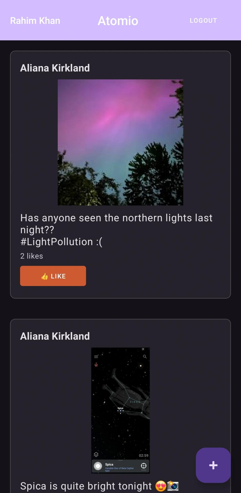
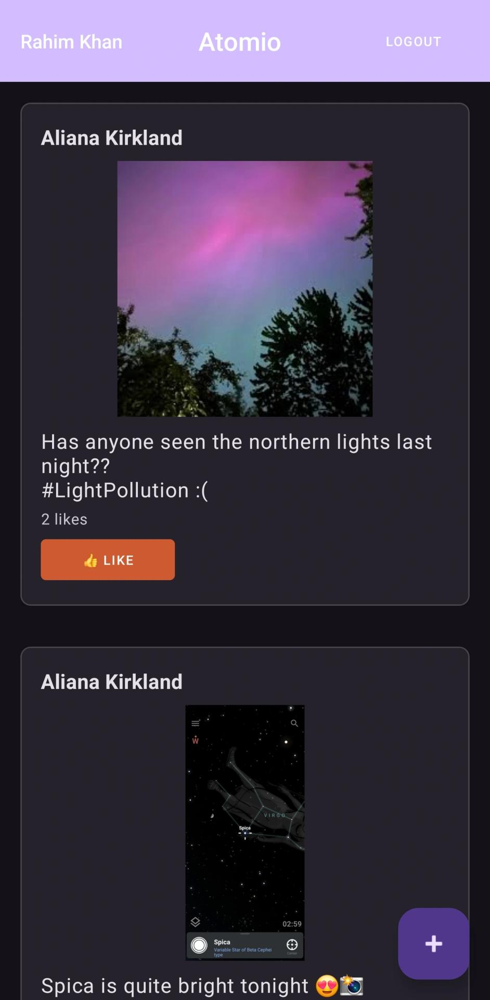

Atomio - A STEM Focused Social Media Platform
Atomio is a full-stack web application that I developed using the MERN stack and later added the support for android devices using Android Studio. It is a social media platform that is focused on STEM. It allows users to create posts, like posts, comment on posts, and follow other users. This project was a great learning experience for me as I learned how to work with the MERN stack and how to create a full-stack application. It has an authentication system that allows users to securely log in and log out of the application. The android application is highly responsive and has a user-friendly interface. The support for IOS devices is in the works. The software also has a content moderation system powered by an AI that checks the content of the user's posts before allowing them to post to keep the community safe.
 
